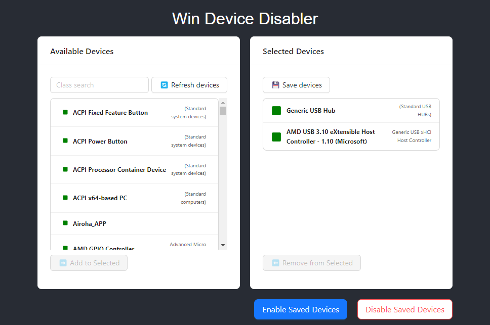

Win Device Disabler
Win Device Disabler
Win Device Disabler allows you to disable or enable any device on your system.
Requires administrator privileges to operate.
Features:
- Select multiple devices to disable or enable.
- Save device lists for future use.
- Enable or disable all devices at once with a single click.
Download Win Device Disabler SETUP v1.0 (Windows) 